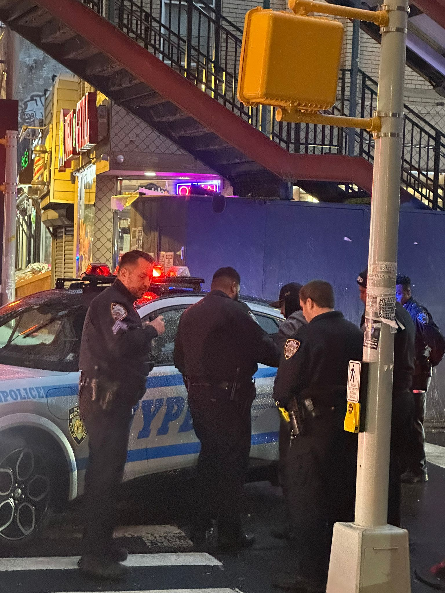
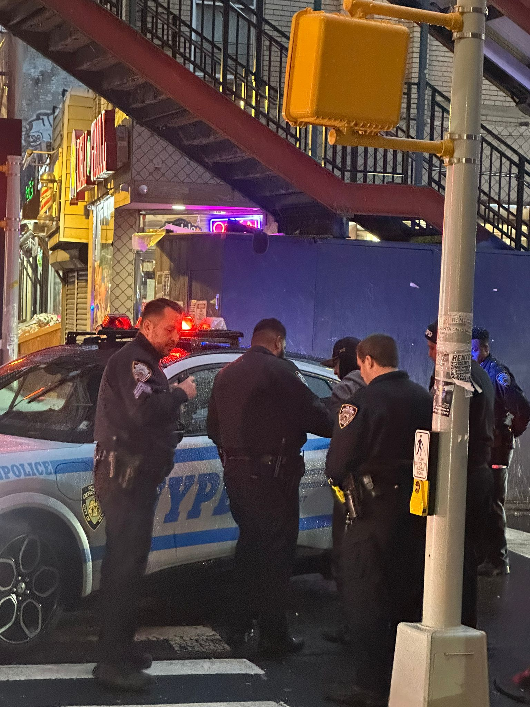

Package Theft Suspect Arrested Following Civilian Patrol Alert in Ozone Park
 

A suspected package theft suspect was arrested on January 19, 2025, near 85th Street and Forest Parkway in Ozone Park, following ongoing complaints from residents about repeated package thefts in the area.
Residents reported near-daily package theft activity, prompting increased concern throughout the neighborhood. Members of the Cityline Ozone Park Civilian Patrol (COPCP) observed a vehicle believed to be connected to the incidents and discreetly followed it while notifying the NYPD.
Police units responded to the location and conducted an investigation. The suspect was taken into custody without incident. The vehicle believed to be involved was also seized, and the individual was removed from the area.
No injuries were reported. Authorities have not yet released the identity of the individual or additional charges. The investigation remains ongoing.
Community members expressed relief following the arrest, citing weeks of repeated package theft complaints throughout the neighborhood.
On-Scene Reporting